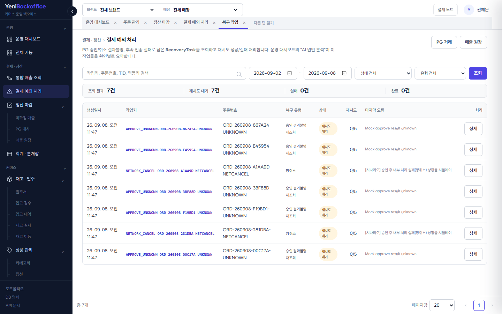
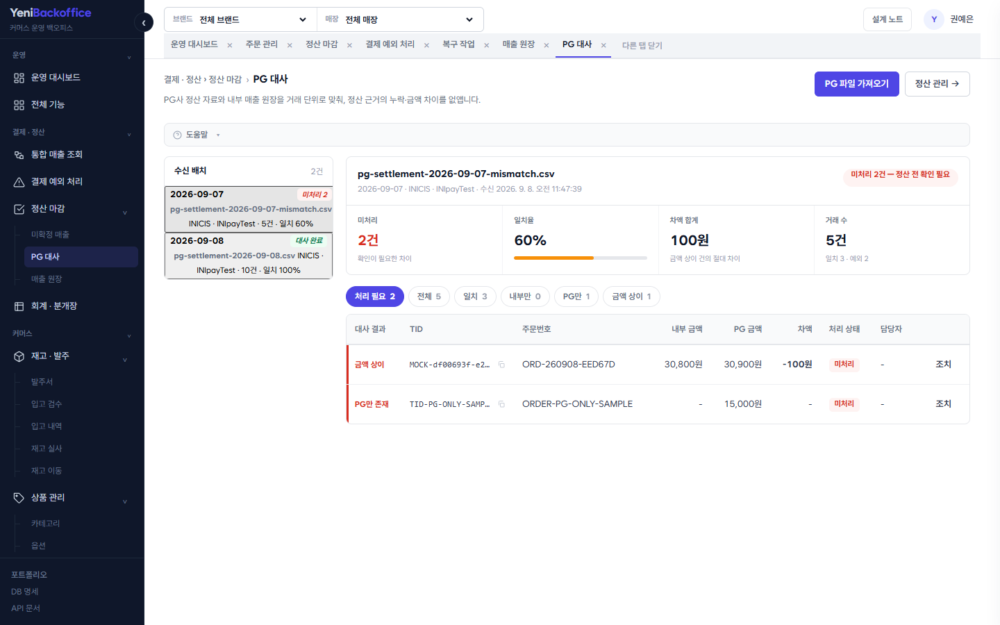

실무에서 겪은 운영 문제를 Java / Spring으로 다시 설계했습니다
개인 프로젝트 · 설계 · 구현 · 테스트 · 배포 단독 수행
크로스보더 커머스사에서 100여 개 해외 쇼핑몰의 주문·결제·배송·정산을, 결제·POS 솔루션사에서 POS/KIOSK 운영
백오피스와 매출·SAP 연동·마스터 데이터를 담당했습니다. 이 프로젝트에서는 해당 경험을 바탕으로 결제 결과불명 처리,
중복 요청과 동시성, 외부 연동 실패 복구, 매출원장과 정산 연결처럼 당시 담당 범위를 넘어 더 깊게 다뤄보고 싶었던
문제를 Java/Spring으로 다시 설계하고 검증했습니다.
실무에서 담당한 것
이 프로젝트에서 다룬 것
크로스보더 커머스사 — PG 완료 요청을 신뢰하지 않고 재조회로 주문번호·금액·통화·상태 대조
APPROVE_UNKNOWN / CANCEL_UNKNOWN 상태와 RecoveryTask로 확장. 결과 확정 전에는 매출원장·정산·후속 처리를 생성하지 않도록 구성
크로스보더 커머스사 — Stripe·Paymentwall 전체/부분취소 API 분리 개발
중복 요청은 idempotency key + DB unique 제약, 동시 부분취소는 결제 row 잠금 후 최신 잔액 재검증
결제·POS 솔루션사 — POS 매출·반품·취소를 영수증 단위로 SAP 전송, 응답값 기준 성공/실패 처리
매출원장을 기준 데이터로 분리하고 정산·회계 데이터를 후속 단계로 연결
결제·POS 솔루션사 — 알림톡 대량발송 Agent 개발 (DB Polling, 최대 10스레드, 실패 재처리)
알림톡·외부전송을 Queue + Worker 방식으로 분리해 한 건의 외부 처리 실패가 핵심 업무 흐름을 막지 않도록 구성
결제·POS 솔루션사 — MS-SQL → MySQL/MariaDB 전환, 실데이터 이관 후 조회 성능 점검·개선 및 스키마 생성 보조도구 제작
H2 → PostgreSQL + Flyway 이관 과정에서 DBMS별 타입·쿼리·배포 환경 차이를 직접 확인하고 수정
2Gradle 멀티모듈 (api · core)
51PostgreSQL 테이블 · Flyway baseline
517s → 12s앱·DB 리전 조정 후 기동시간
0동일 source 재전기 시 분개 중복
Yeni Backoffice · 권예은2
02 · ARCHITECTUREYENI BACKOFFICE
결제·정산 규칙과 화면·외부 연동을 분리했습니다
핵심 업무 규칙은 core에, 화면과 외부 요청은 api에 두고 실패 가능한 외부 처리는 별도로 관리
Operator BrowserThymeleaf · htmx · JS
↓ HTTP / JSON
api moduleView · REST Controller · 표준 오류 응답
↓ use case
core moduleEntity · Repository · 도메인 서비스 · 상태 관리
↓ JPA ↓ Gateway
PostgreSQLFlyway · 매출원장
ExternalMock PG · 알림톡
설계 원칙
결제 승인과 매출 확정 같은 핵심 업무 규칙은 core에 두고, 화면·REST API·외부 전송은 api에서 처리했습니다.
PG나 알림톡처럼 실패할 수 있는 외부 시스템은 핵심 트랜잭션과 분리하고, 결과를 확정할 수 없는 경우에는
재조회·재처리가 가능하도록 상태를 남겼습니다.
중복 생성은 서비스 사전 조회와 DB unique 제약을 함께 적용해 방어했습니다. 현재 데모에서 일부
참조 관계의 FK는 생략했으며, 운영 환경 적용 시 삭제 정책과 데이터 정합성을 기준으로 FK 적용 범위를 재검토할 항목입니다.
Yeni Backoffice · 권예은3
03 · ISSUE ① 결과불명 · 복구YENI BACKOFFICE
성공도 실패도 아닌 '결과불명'을 운영 상태로
PG 승인 요청 중 timeout이나 응답 유실이 발생하면 실제 승인 여부를 즉시 확정할 수 없습니다. 실패로 단정하면
승인된 결제를 취소할 수 있고, 성공으로 처리하면 미결제 주문이 처리될 수 있어 승인/실패 이외의 '확정 대기' 상태가 필요했습니다.
실무 연결 — 크로스보더 커머스사에서 Stripe·Paymentwall 연동 시 결제 완료 요청을 그대로 신뢰하지 않고
PG API를 재조회해 주문번호·금액·통화·상태를 검증했습니다. 이 프로젝트에서는 해당 경험을 UNKNOWN 상태와 복구 작업으로 확장했습니다.
결과 / 배움 — 재조회가 반복돼도 SALE 원장과 후속 Queue가 중복 생성되지 않도록 구성했습니다.
복구 작업은 조건부 claim으로 중복 실행을 방지했고, 외부 시스템 연동에서는 성공/실패 외에 '아직 결과를 확정할 수
없는 상태' 자체를 업무 상태로 관리해야 한다는 점을 설계에 반영했습니다.
Yeni Backoffice · 권예은4
04 · ISSUE ② 중복 · 동시성YENI BACKOFFICE
중복 클릭·네트워크 재시도·동시 부분취소를 막다
승인·취소 요청은 중복 클릭이나 네트워크 재시도로 반복될 수 있습니다. 또 승인금액 10,000원에 8,000원 부분취소
2건이 동시에 들어오면 각 요청이 이전 취소금액을 기준으로 판단해 승인금액을 초과할 수 있습니다.
실무 연결 — 크로스보더 커머스사에서 전체취소·부분취소 API를 분리 개발했고, 여러 쇼핑몰이 공용으로
사용하는 PG API 서버를 운영하며 중복 요청에 대한 방어 필요성을 경험했습니다.
중복 요청
idempotencyKey / cancelRequestKey로 기존 처리 결과를 먼저 조회
DB unique 제약으로 동시에 들어온 중복 요청 최종 방어 (order_no,tid · cancel_request_key · source_type,source_id)
동시 부분취소
대상 결제 row를 PESSIMISTIC_WRITE로 조회
lock 획득 후 최신 누적 취소금액으로 잔액을 다시 계산
최신 잔액 기준으로 취소 가능 금액 검증
서로 다른 paymentId는 서로 다른 row를 사용하므로 불필요한 전역 잠금은 사용하지 않음
결과 / 배움 — 중복 요청은 idempotency key와 DB unique 제약으로 방어하고, 동시 부분취소는
결제 row를 잠근 뒤 최신 잔액을 재검증하도록 분리했습니다. 현재 동시성 통합 테스트는 H2 기반이며, PostgreSQL의
실제 lock/isolation 동작은 Testcontainers 전환 후 추가 검증할 계획입니다.
Yeni Backoffice · 권예은5
05 · ISSUE ③ 매출원장 · 정산YENI BACKOFFICE
취소 이력을 보존하면서 매출원장과 정산으로 연결했습니다
결제 상태만 변경하는 방식으로는 취소가 발생했을 때 특정 시점의 매출과 취소 이력을 정확히 재구성하기 어렵습니다.
특히 원 거래를 직접 수정하면 이후 정산이나 장애 추적에서 기준 데이터가 달라질 수 있어 매출원장을 별도로 두었습니다.
승인 거래는 SALE 원장 생성, 취소는 기존 SALE을 수정하지 않고 음수 CANCEL 원장을 추가
source_type + source_id unique로 동일 원천 거래의 원장 중복 생성 방지
정산은 payment_transaction이 아니라 미정산 SALE/CANCEL 원장을 기준으로 집계
회계 분개는 원장·정산 데이터를 읽어 생성하는 별도 후속 데이터로 구성
실무 연결 — 결제·POS 솔루션사에서 POS 매출·반품·취소를 영수증 단위로 SAP에 전송하고 응답 결과를
관리했던 경험을 바탕으로, 이 프로젝트에서는 내부 매출원장과 정산까지 연결했습니다.
회계·분개장 — 매출원장과 정산 결과를 기준으로 분개를 생성하고, 차변·대변 합계와 중복 전기 여부를
검증합니다. 회계 기능은 결제·정산 데이터가 이후 업무로 어떻게 연결되는지 확인하기 위한 확장 구현입니다.
Yeni Backoffice · 권예은6
06 · ISSUE ④ 후속 처리 분리YENI BACKOFFICE
알림톡·외부 전송 실패가 결제 저장을 막지 않도록 분리했습니다
결제 트랜잭션 안에서 외부 API나 알림톡을 직접 호출하면 외부 시스템의 지연이나 장애가 결제 저장까지 지연시키거나
실패시킬 수 있습니다.
실무 연결 — 결제·POS 솔루션사에서 DB Polling 방식의 알림톡 Agent를 개발하고 최대 10개 스레드
병렬 처리와 실패 건 재처리를 적용했습니다. 테스트 기준 5만 건을 약 19분에 처리했고 평균 CPU 사용률은 10~20% 수준이었습니다.
해결
결제/매출 트랜잭션에서는 external_send_request, alimtalk_queue에 대기 데이터만 생성 (Outbox 형태의 DB Queue)
Worker가 조건부 update로 처리 대상을 claim한 뒤 성공한 요청만 실행
각 건의 성공/실패와 retry count, 오류 원인을 기록
한 건의 실패가 다른 작업을 막지 않도록 개별 처리 단위로 분리
UPDATE external_send_request SET status = 'SENDING'
WHERE id = ? AND status IN ('READY','FAILED') -- 조건부 claim, 성공한 요청만 실행
결과 / 배움 — 외부 전송을 결제 저장 흐름에서 분리해, 한 건의 실패나 지연이 핵심 업무 흐름과
다른 대기 작업에 영향을 주지 않도록 했습니다. 재시도 한계에 도달한 건은 처리 대상 조회에서 제외됩니다.
Yeni Backoffice · 권예은7
07 · ISSUE ⑤ PostgreSQL 이관YENI BACKOFFICE
H2에서 잘 되던 것이 실제 PostgreSQL에서 달라졌습니다
실무 연결 — 결제·POS 솔루션사에서 MS-SQL → MySQL/MariaDB 전환 시 DBMS별 함수·문법과 데이터
적재 방식 차이에 대응했고, 실데이터 이관 후 다수 조회 화면의 성능을 점검·수정했습니다. 반복적인 테이블 생성 작업을
줄이기 위해 데이터타입·PK·FK를 변환해 MySQL용 CREATE TABLE 문을 생성하는 C# 보조도구도 만들어 사용했습니다.
배경 · baseline
데모가 H2 인메모리라 재시작마다 데이터가 사라지고, 스키마도 ddl-auto로 관리돼 엔티티와의 차이를
확인하기 어려웠습니다. 기존 마이그레이션 SQL은 MySQL 문법 + 버전 중복이라 정리하고, 엔티티에서
PostgreSQLDialect로 스키마를 뽑아 V1__baseline.sql(51 테이블)을 만든 뒤
ddl-auto=validate로 엔티티와 스키마 정합성을 확인하도록 바꿨습니다.
확인한 차이 → 수정
· @Lob String → PostgreSQL oid 매핑 문제 → text 타입 명시
· lower(bytea), parameter type 오류 → PostgreSQL의 파라미터 타입 추론 차이에 맞게 쿼리 수정
· /database-spec 응답 지연 → JDBC metadata 반복 조회 제거 및 캐시 적용
· 앱 Tokyo / DB Virginia → 네트워크 왕복으로 기동 517초 → 앱을 DB와 동일한 iad 리전으로 이동 후 약 12초
결과 / 배움 — H2에서는 드러나지 않던 타입·쿼리·DBMS 동작 차이가 실제 PostgreSQL 배포
과정에서 확인됐습니다. 이 경험을 통해 통합 테스트 역시 운영 DB와 동일한 PostgreSQL 환경에서 검증할 필요성을 확인했습니다.
Yeni Backoffice · 권예은8
08 · SCREENS · 운영 대시보드YENI BACKOFFICE
전체 수치보다 '지금 확인할 예외'와 '다음 작업'을 먼저
운영자가 문제를 발견한 뒤 원본 화면까지 바로 추적할 수 있도록 구성
결과불명 결제, 복구 대기, 안전재고 미달, 정산 초안처럼 운영자가 지금 확인해야 할 항목을 한 화면에
모았습니다. 각 항목에서는 필터가 적용된 원본 관리 화면으로 바로 이동할 수 있도록 구성했습니다. 실패 로그와 복구
작업을 요약하는 AI 분석은 운영 판단을 돕는 보조 기능으로 추가했습니다.
Yeni Backoffice · 권예은9
09 · SCREENS · 결제 · 복구YENI BACKOFFICE
결제 예외를 추적하고, 복구 작업으로 이어지게 했습니다
PG 거래승인·부분취소·결과불명 거래를 상태별로 조회합니다. 상세에서는 주문 → 승인 → 매출원장 → 정산 흐름과 PG 로그·복구 작업·외부전송·알림톡 상태를 함께 확인할 수 있습니다.

복구 작업APPROVE_UNKNOWN_CHECK, NETWORK_CANCEL 등 처리가 필요한 RecoveryTask를 상태·유형·키워드로 조회합니다. 상세 화면에서 재시도하거나 성공·실패 결과를 직접 반영할 수 있습니다.
운영 대시보드의 복구 대기 항목에서 해당 상태로 필터링된 복구 작업 화면으로 바로 이동하도록 연결했습니다.
Yeni Backoffice · 권예은10
10 · SCREENS · 원장 · 정산 · 대사YENI BACKOFFICE
확정된 매출만 정산하고, 불일치는 지급 전에 확인합니다
매출 원장SALE/CANCEL 이력을 누적해 원 거래를 덮어쓰지 않고, 공급가·부가세와 정산 상태를 함께 조회합니다.정산 관리미정산 SALE/CANCEL 원장을 집계해 DRAFT → CONFIRMED → PAID 단계로 관리합니다.

PG 대사외부 정산 데이터와 내부 매출원장을 거래 단위로 비교해 누락·외부 단독·금액 차이를 구분합니다.
대사 불일치가 남아 있는 정산 명세는 확정할 수 없도록 해 잘못된 정산이 지급 단계로 넘어가지 않도록 구성했습니다.
Yeni Backoffice · 권예은11
11 · QUALITY & OPSYENI BACKOFFICE
실패 시나리오를 검증하고 실제 환경에 배포했습니다
검증한 시나리오
동일 승인 재요청 시 기존 결제 반환 + SALE 원장 중복 생성 방지동시 부분취소 시 승인금액 초과 방지승인 결과불명 시 SALE 미생성 + RecoveryTask 생성재조회 성공 시 누락된 원장·후속 Queue 1회 생성외부전송·알림톡 Worker 성공/실패/retry 검증주문 → 결제 → 원장 → 배송 → 정산 주요 업무 흐름 E2E 검증
한계일부 통합 테스트는 아직 H2(PostgreSQL 호환 모드) 기반입니다. 실제 PostgreSQL의
lock wait·isolation·deadlock 특성까지 검증하기 위해 Testcontainers 기반 PostgreSQL 통합 테스트 전환을 다음 작업으로 두고 있습니다.
JUnit 5 · Spring Boot Test · MockMvc로
도메인 단위·통합 테스트를 작성하고, 주문부터 정산까지 이어지는 운영 흐름은 Playwright E2E로 확인합니다.
push마다 GitHub Actions에서 전체 테스트가 실행됩니다.
INFRA
Docker → fly.io
멀티스테이지 빌드 후 애플리케이션 배포. PostgreSQL과 애플리케이션을 동일 리전에 배치.
SCHEMA
Flyway
V1 baseline 이후 마이그레이션 이력을 관리하고 ddl-auto=validate로 엔티티와 스키마 정합성 확인.
CI
GitHub Actions
push 시 Gradle build와 전체 테스트 수행.
SCHEDULER
운영 배치
구매확정·정산 초안·회계 전기 배치를 구성하고 개별 처리 실패가 다음 실행 전체를 막지 않도록 예외를 분리.
Yeni Backoffice · 권예은12
12 · SCOPEYENI BACKOFFICE
현재 구현 범위와 다음 개선
인증·권한
현재 데모는 오픈 상태. 운영 적용 시 Spring Security 기반 RBAC와 사용자별 감사로그 추가
실 PG
현재 Mock Adapter 사용. 실제 적용 시 sandbox PG 연동 및 webhook signature 검증
통합 테스트
H2 기반 일부 테스트를 Testcontainers PostgreSQL로 전환해 실제 DB의 lock/isolation 동작까지 검증
운영 확장
다중 Worker, 장기 처리 상태 복구, dead-letter, 구조화 로그와 핵심 운영 메트릭 추가
권예은 · BACKEND / API SERVER
운영을 이해하고, 실패 이후까지 설계하는 개발자
C#/.NET 기반으로 주문·결제·POS/KIOSK 운영 시스템을 개발해왔습니다.
실무에서 경험한 문제를 Java/Spring으로 다시 설계하며 백엔드 기술 스택을 확장하고 있습니다.